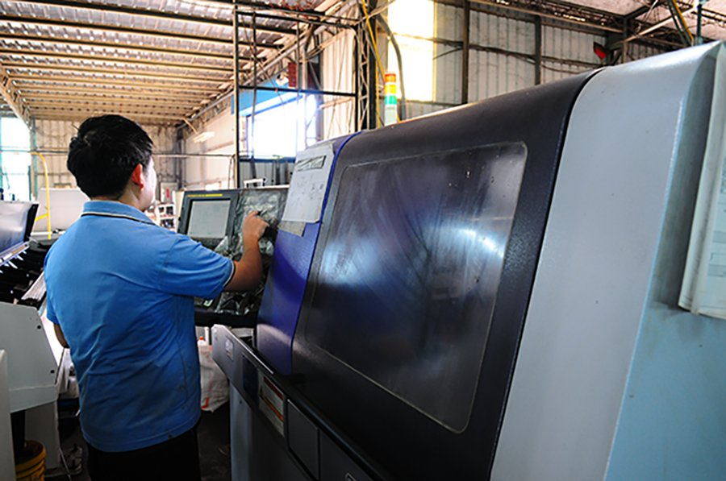
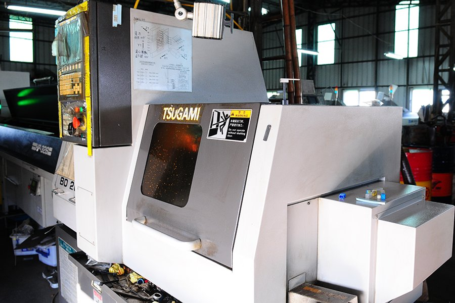
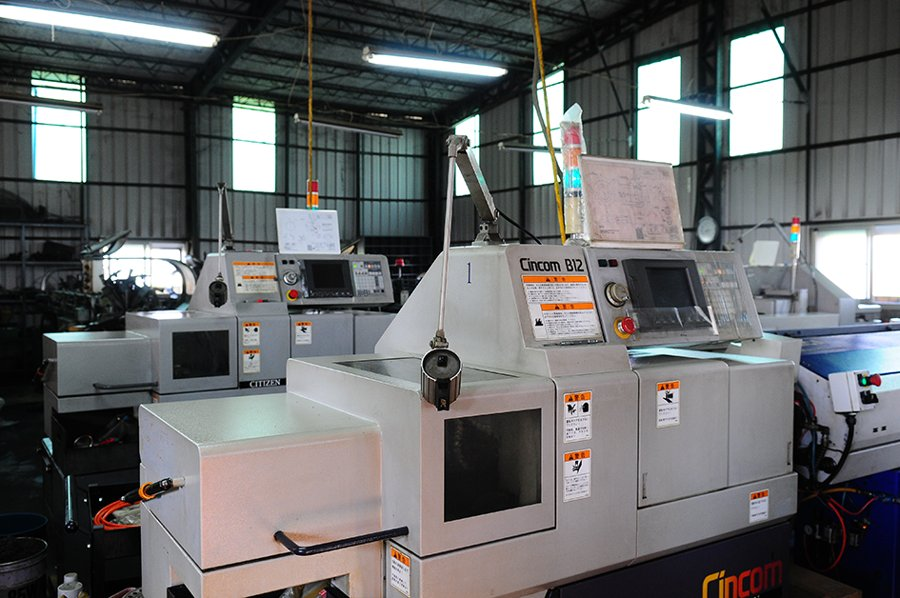
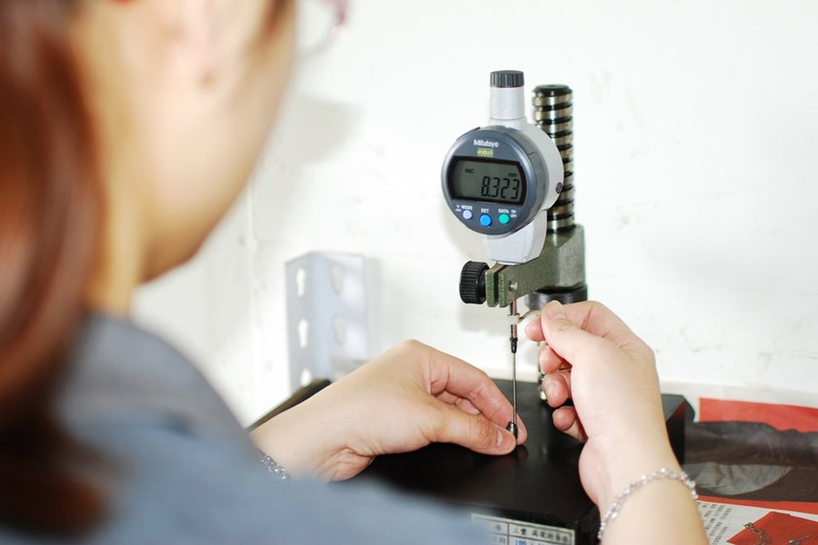

RI YUE XING manufactures precision CNC turned and milled components — Ø1mm to Ø20mm, ±0.01mm tolerance — that become critical parts inside our customers' industrial, automotive, electronics, fastener and aerospace products. A long-term OEM/ODM manufacturing partner from Taiwan.
Established in 1987 and located in Kaohsiung, Taiwan, RI YUE XING PRECISION INDUSTRIAL CO., LTD. specializes in precision CNC turning and milling for components under Ø20mm. We do not manufacture finished products — we manufacture the precision CNC machined components that become critical parts inside our customers' products, according to their drawings and specifications.
Our in-house capability spans Swiss-type CNC turning, CNC turning, CNC milling, 5-axis machining and precision secondary processing, working in stainless steel, aluminum, brass, copper, titanium and other engineering metals — supporting both OEM production and ODM development with stable, long-term mass production.

From raw bar stock to finished precision components — standard 4-axis multiple-machining capability in a single CNC automatic lathe.
High-volume precision turning for small metal components.
Ultra-precise turning for slender, high-tolerance parts.
Versatile turning for a broad range of part geometries.
Complex milled features and multi-axis machining.
Complex geometries in a single setup for tight-tolerance parts.
Plating, polishing, deburring and custom finishing.



Every production run passes First Article Inspection, In-Process Inspection, 100% Final Inspection and CMM measurement against drawing tolerances before shipment.
Brass inserts, pins, fasteners, nuts, washers, screws and precision CNC lathed parts — manufactured to your drawing and specification, not sold as catalog parts.
RI YUE XING's precision components become critical parts across these industries.
We are actively developing OEM/ODM partnerships in the following priority markets, in this order of focus.
Our team responds to RFQs and supplier inquiries within 1–2 business days.
No.77-1, Jiangshan Rd.,
Daliao Dist., Kaohsiung City 831, Taiwan (R.O.C.)